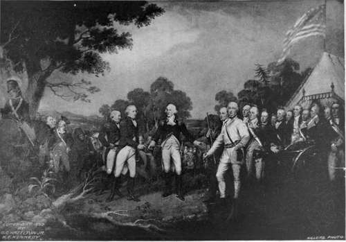
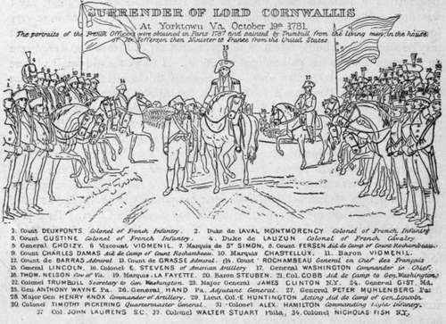

Tin Trumbull Paintings. Continued
Description
This section is from the book "The National Capitol. Its Architecture Art And History", by George C. Hazelton, Jr. Also available from Amazon: The National Capitol Its Architecture Art and History.
Tin Trumbull Paintings. Continued
The Signing of the Declaration of Independence is the most generally admired, as it is the most natural in tone and finish; after it, the Resignation of Washington. Perhaps the superiority of these interior scenes is somewhat attributable to the artist's apparent want of skill in landscape painting, evinced by the backgrounds in the companion pictures. John Quincy Adams, in his diary of September i, 1818, written in New York, gives an interesting reflection in disparagement of the picture which is now best liked : " Called about eleven o'clock at Mr. Trumbull's house, and saw his picture of the Declaration of Independence, which is now nearly finished. I cannot say I was disappointed in the execution of it, because my expectations were very low; but the picture is immeasurably below the dignity of the subject. It may be said of Trumbull's talent as the Spaniards say of heroes who were brave on a certain day : he has painted good pictures. I think the old small picture far superior to this large new one. He himself thinks otherwise. He has some books on the President's table which the Abbe Correa advised him to letter on the backs, Locke and Sidney. I told him I thought that was not the place for that. They were books for the members to read at home, but not to take with them there. I advised him to letter them simply 1 Journals.' "
SURRENDER OF GENERAL BURGOYNE.
Upon the completion of all the paintings, they were hung in their present positions, two of them by the President's permission having been previously exhibited in other cities, where they are said to have met with general praise. The Declaration of Independence was first temporarily hung in the room of the north wing, then used for the sittings of the Supreme Court. That portion of the old Capitol had been first rebuilt and was believed to be dry; but it proved far otherwise. When the paintings were hung, John Randolph, who had supported and voted for the Trumbull resolution, maliciously criticised them in debate, in opposition to the New England members, who, in the finished work, found praise for the artist. His bitterness, however, can be accounted for upon no other hypothesis than that Congressmen, like the ladies, have the privilege of changing their minds.
" When, in 1824, I went to Washington," writes Trumbull, " to place all the paintings in their ultimate destination, I found the grand room finished indeed, but so very damp that I felt great reluctance in placing them there, and insisted most strenuously upon having the great opening in the centre of the room, which had been left for the purpose of lighting the crypt, closed; for, as the arches behind and under the porticos were closed only by iron grilles, the external air was freely admitted into the crypt, in all varieties of weather, as well by night as by day, and thence, by means of this unfortunate and ill judged opening, distributed through the great room, to every part of the principal floor of the building, rendering the atmosphere of all of the apartments equally damp and cold as the weather in the open square. My remonstrances, however, were all in vain; and in this situation the four paintings were .placed and remained until, in 1828, the change on their surfaces became obvious and conspicuous to all who saw them, and occasioned the resolution of the house of representatives alluded to in the following report,* which I addressed to the speaker of the house on the 9th of December, 1828".
To guard against future injury, the paintings under the artist's direction were removed to dry rooms and the backs of the canvases coated with melted beeswax and oil of turpentine. The niches in the solid walls were plastered with hydraulic cement. At the same time, curtains were hung which could be drawn over the pictures when the rotunda was swept, and self-closing baize doors erected to keep out the cold air.
* See Appendix, p. 257.
Strange to say, the light from above, which the artist fought to obtain by the construction of the old dome, and which is similar in the new one, is so diffused that, aided by thousands of shadows and reflections and by the peculiar colors used in the paintings, it has preserved the Trumbull pictures seventy-three years uncopied save by pencil. Even the vignettes used by the government in the adornment of certain monetary issues are engraved from sketches. J. K. Hillers, the photographer of the Geological Survey, and one of the party who, with Major Powell, first explored the Grand Canon of the Colorado, secured them, and the other paintings in the rotunda, for this volume in July, 1897, by a secret process.
Continue to: